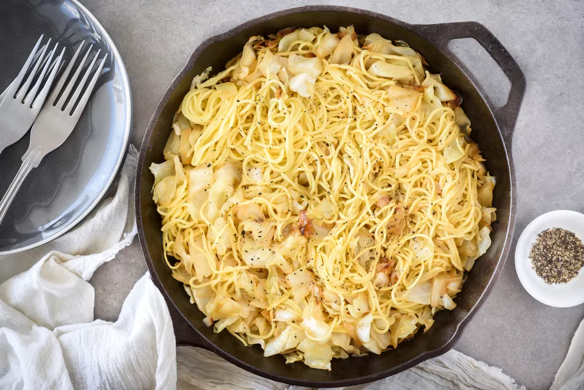

Polish Haluski Recipe
INGREDIENTS
- 1 onion (very large and sliced into rounds)
- 8 ounces butter (divided)
- 1 large head cabbage (cut into 1-inch pieces)
- Salt (to taste)
- Freshly ground black pepper (to taste)/li>
- 8 ounces egg noodles (1/2-inch wide, cooked)
Preparation Time
Time needed: 45 mins
Instructions
- Cut the round onion slices in half and then in half again so each round yields four pieces.
- In a large skillet or Dutch oven, sauté onion in 4 ounces of butter, stirring frequently, over low
heat
until very
lightly caramelized. This could take 15 minutes or more.
- Do not cover. Sauté slowly, stirring frequently, over low heat until cabbage is tender, but not
brown
(cook to al dente
stage if baking in the oven). This could take 30 minutes or more.
- If using the stovetop method, combine onion-cabbage mixture with 8 ounces cooked noodles, mixing
well.
Adjust seasonings
and serve.

For other recipes that contains Onion~
-
recipe 1
-
recipe 2
Original Recipe
can
be
found here.
Go back to main page